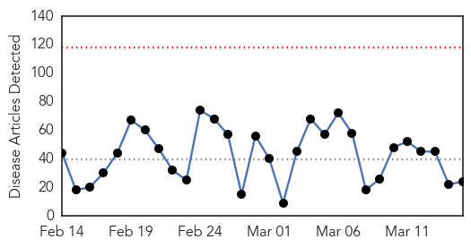
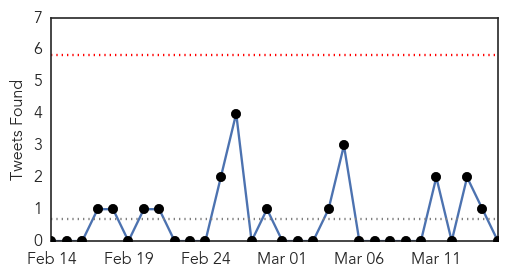
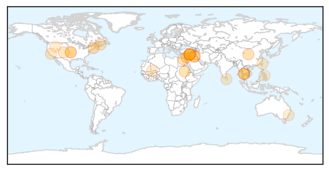
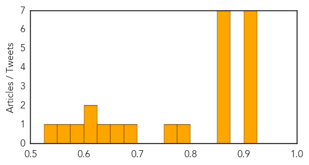
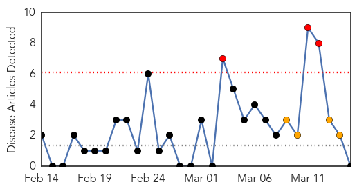
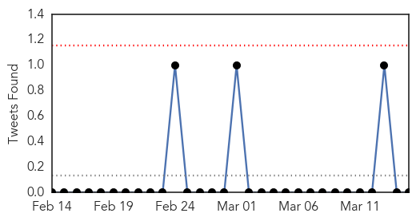

Unknown
30-Day Web Trend
0 alerts, 0 warnings

30-Day Twitter Trend
0 alerts, 0 warnings

Article Locations
Article Confidences
Top Articles:
- 0.917
- Chicago Tribune
- 0.917
- Chicago Tribune
- 0.917
- Chicago Tribune
- 0.917
- Chicago Tribune
- 0.917
- Chicago Tribune
- 0.910
- The world windows to Thailand
- 0.905
- Pig farmers urged to take steps to curb erysipelas
- 0.866
- MAGNITUDE 6.5 EARTHQUAKE STRIKES NORTHWESTERN PERU -USGS
- 0.866
- Sudanese police fire tear gas at anti-government protesters
- 0.866
- Three killed in S.African plane crash -emergency service
- 0.866
- Malaysian police search home of missing plane's pilot
- 0.866
- Malaysian police search home of missing plane's pilot
- 0.866
- Madagascar says IMF resumes ties for first time since 2009 coup
- 0.866
- European Investment Bank bank freezes activities in Ukraine over violence
- 0.788
- Deadly pig virus shows up at heavily used site for pigs
- 0.768
- Computer virus at Glenwood hospital may have jeopardized patient info
- 0.679
- WSU researchers find new form of poultry disease
- 0.651
- Mali protects children from malaria - Mali
- 0.636
- Council downplays threat of hog disease outbreak
- 0.621
- Hospital database hacked, patient info vulnerable
- 0.609
- Kidney failure of unknown cause baffles Sri Lankan doctors
- 0.585
- Patients are clogging up state hospital emergency rooms with minor conditions costing taxpayers close to $1 billion a year.
- 0.564
- Inexpensive, simple tests enough to detect TB
- 0.538
- Cebu News, The Freeman Sections, The Freeman
Top Tweets:
- 0.746
- 😂😂😂😂 it is cute 😂 200+ en menos de un 1 mint jajajjaja
- 0.689
- RT: El dÃa está de playa y adivinen quién no está en la playa ✋😩
- 0.536
- contra todo pronostico posible;contra la logica de lo predecible...dejaste mi corazon a la interperie;en una serie de extañas coicidencias
Cholera
30-Day Web Trend
3 alerts, 4 warnings

30-Day Twitter Trend
0 alerts, 0 warnings

Article Locations

Article Confidences

Top Articles:
-
No articles found for Mar 15, 2014
Top Tweets:
-
No tweets found for Mar 15, 2014